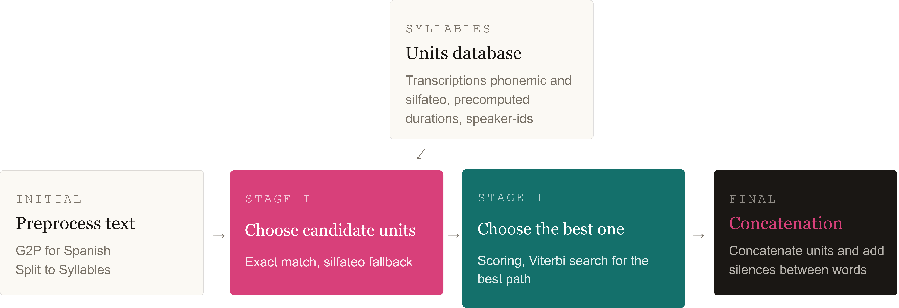

Concatenative Synthesis Pipeline
for Silbo Gomero
from Sub-Hour Multi-Speaker Recordings
Radosława Żukowska1, Fernando Ramos López2,
Mateo José Cámara Largo3, Klara Borowa1
1 Warsaw University of Technology, Poland,
2 Independent Researcher, Spain,
3Universidad Politécnica de Madrid, Spain
Presented at IberSpeech 2026
System Architecture
The diagram below illustrates the high-level workflow of our synthesis system.

Synthesized Audio Samples
Below are selected examples. They are divided here based on the results of the listening text conducted with practicioners and students of Silbo.
Most intelligible samples:
Transcript: Buenas tardes.
Transcript: Dales agua a los animales.
Transcript: Yo no te entiendo..
Least intelligible samples:
Transcript: Baja al valle.
Transcript: Pon los plátanos a la sombra.